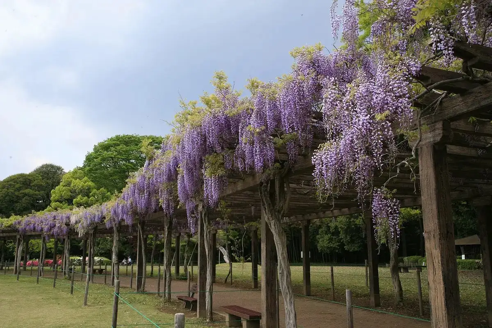
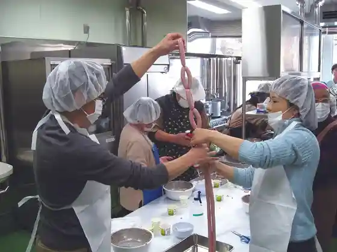

Ora, Gunma
Ora · Gunma
Ora
Highlighted on the Gunma map.

Sights
Oishisa Kanade Ru Chokubai Tokoro Aiai Center
Prefectural Tatara Numa Park
Soba no Town Ora
Arui Te Noboro U ! Ora Shimborutawa Kenko Uoku
Jibungonomi Ni Arenji (Tezukuri Uinna Kyoshitsu)

Ora Shimborutawa Mirai MiRAi